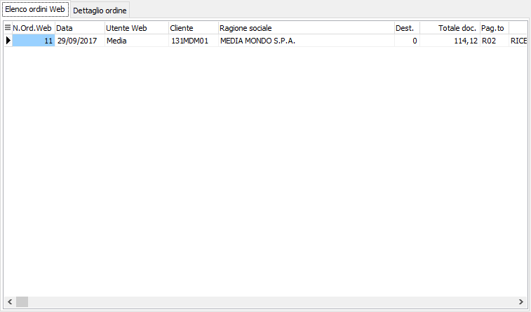
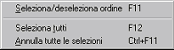
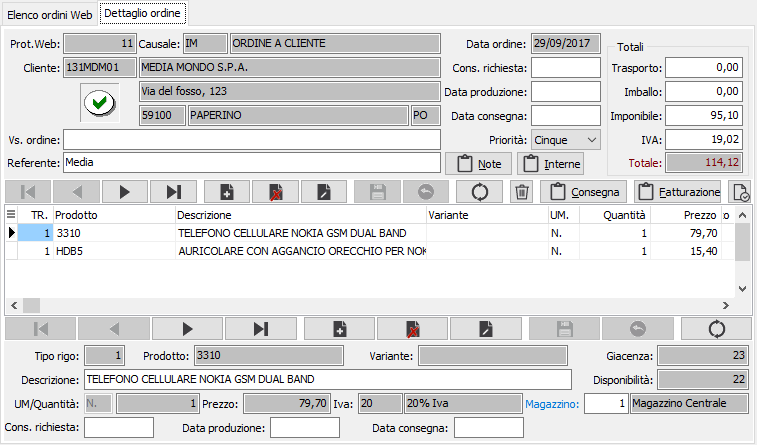
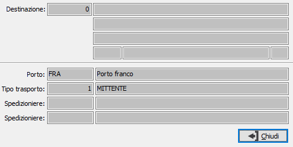
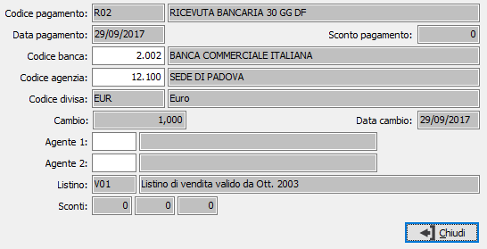

Importazione ordini web B2B
La procedura consente di importare i dati relativi agli ordini inseriti dall'area eCommerce B2B del web. Accedendo al programma vengono visualizzati gli ordini provenienti dal web e non ancora trattati.

Nel caso non siano gestite da configurazione ordini, le date di consegna, prevista consegna o produzione, sarà possibile, direttamente da questa sezione selezionare gli ordini da importare in OS1, anche senza accedere alla pagina successiva.

La selezione degli ordini e l'annullamento della stessa (se selezionato verrà annullata la selezione altrimenti il contrario) può avvenire tramite il menù indicato a lato (attivato tramite la pressione del tasto destro del mouse) oppure utilizzare gli appositi tasti funzione. È consentito selezionare o deselezionare un solo ordine oppure tutti gli ordini presenti.
Il doppio clic del mouse su un ordine, accede alla pagina successiva da cui è possibile visualizzare i dettagli dell'ordine, apportare modifiche solo ad alcuni campi, visualizzare le condizioni sia di consegna, che di fatturazione. Da questa sezione è comunque possibile scorrere gli ordini presenti sulla pagina precedente, accettare o rifiutare un singolo ordine.

La pagina appare suddivisa in due parti; la parte superiore riporta i dati di testa, con attivi solo i campi che possono essere modificati, il navigatore per spostarsi da un ordine all'altro ed i pulsanti di accettazione, rifiuto e visualizzazione delle condizioni di consegna, fatturazione ed annotazioni. Se i pulsanti appaiono con la scritta rossa vuol dire che contengono informazioni inserite dall'utente che ha creato l'ordine sul Web. La sezione sottostante contiene le righe dell'ordine.
Nel caso l'utente gestisca le date di consegna, di testa o di rigo, queste sono obbligatorie; l'inserimento della data di consegna sulla testa comporta l'assegnazione della data stessa a tutte le righe, dove è comunque consentito modificarla.
Il pulsante consente di visualizzare le condizioni di consegna dell'ordine, dove sono riportati il porto, il tipo di trasporto, gli spedizionieri e l'eventuale destinazione specificata dall'utente che ha inserito l'ordine. I dati presenti non sono modificabili.

Il pulsante consente di visualizzare le condizioni di fatturazione dell'ordine, dove sono riportati il pagamento, la banca, la divisa, gli agenti e gli eventuali sconti assegnati all'utente che ha inserito l'ordine. I dati presenti non sono modificabili, fatta eccezione per la banca e gli agenti.

Il pulsante consente di accettare l'ordine e comporta la generazione sugli ordini di OS1. Prima di procedere alla registrazione viene richiesta conferma all'utente e dopo la registrazione, se previsto, viene inviata una e-mail di conferma al cliente con gli estremi di registrazione dell'ordine appena importato. L'operazione dopo la conferma è definitiva.
Il pulsante consente di rifiutare l'ordine e comporta l'esclusione del documento dalla generazione negli ordini di OS1. Prima di procedere alla registrazione viene richiesta conferma all'utente e consentito l'inserimento in un campo note esteso dell'eventuale motivazione relativa al rifiuto dell'ordine. Se previsto, viene inviata una e-mail al cliente con gli estremi dell'ordine rifiutato e, se sono state inserite le note, un messaggio contenete quanto inserito nelle note di motivazione al rifiuto. L'operazione dopo la conferma è definitiva.